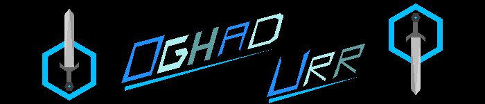
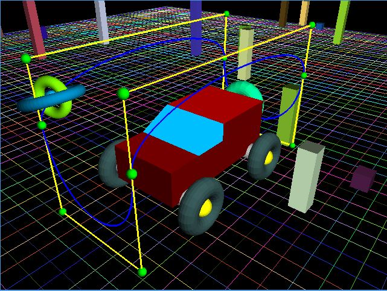
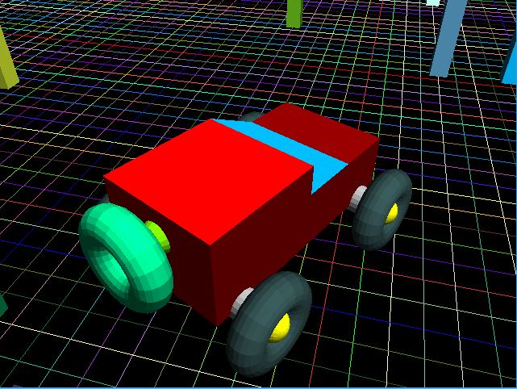
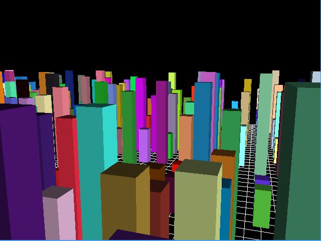
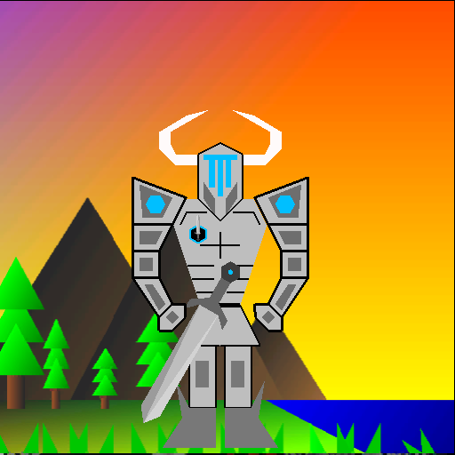
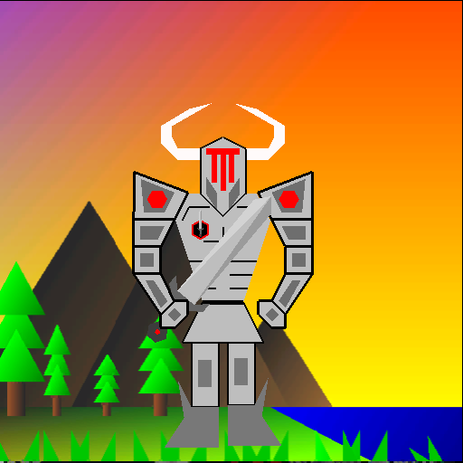

CSCI 441 - Computer GraphicsFall 2016 |
|
| | Home | Syllabus | Assignments | Leaderboard | Schedule | Resources | | |
"Oghad Urr"This is Oghad Urr's banner!  This is Oghad's car with a sprite traveling around the car on the path of a Bezier curve. The Bezier curve was created using several groups of 4 control points that make up control cages. The curves are calculated using the concept of linear interpolation along the control points. The bezier curve / control cage can be toggled and leave the sprite still revolving around the car as the car moves or stands still. The sprite itself is animated to have a growing/shrinking sphere and rotating torus' around the sphere.  This is Oghad Urr's car! This program introduced using an ArcBall camera to track the hero's car, while dragging the mouse changed the camera orientation with the look at point situated on the car. The car's heading and position could be changed using WSAD. And the car had both passive animation and animation induced via movement.  This is my first 3D project ever, which was a basic flight simulator (moved a camera between buildings)  This is Oghad Urr in a good mood! This program included animation for breathing, as well as moving around via keyboard or mouse input, as well as a way to switch into evil mode! Additionally, the program allowed Oghad to move around between different backgrounds.  This is Oghad Urr in an evil mood! 
This is Oghad Urr's homeworld, The Golden Wastelands! 
This is Oghad Urr's first openGL project ever! | |